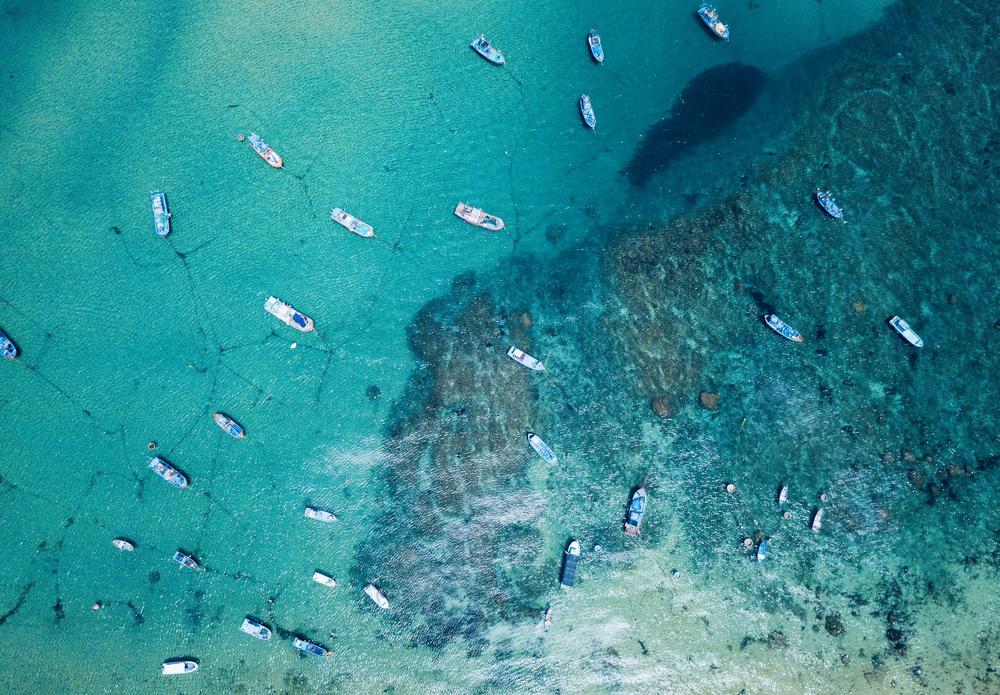
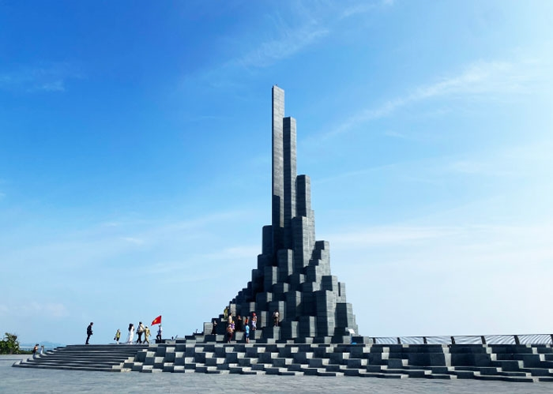

Hai phương án cho chuyến đi biển 16–18/5/2026. Tiêu chí: thư giãn, di chuyển bằng xe khách, ngân sách hợp lý cho cả nhóm.
Chuyến đi tập trung vào những điều nhóm thật sự cần — biển, hải sản, và lịch không quá dày.
Tắm biển, lặn ngắm san hô, đi cano. Lịch không quá dày, có thời gian thư giãn.
Quán hải sản tươi, đa dạng món, đáp ứng được nhóm 6 người.
Bằng xe khách. Cả 2 đoàn ĐN và HCM đều tới được trong 1 đêm.

Kỳ Co, Hòn Khô — nước trong, rặng san hô đẹp.
Đường Xuân Diệu, bún chả cá, bánh xèo tôm nhảy.
Hạ tầng tốt, dễ tìm KS 3 sao cho 6 người.
Biển Kỳ Co và Hòn Khô có nước trong, có rặng san hô để lặn ngắm. Hải sản tươi, giá hợp lý, nhiều quán quanh đường Xuân Diệu.
Di chuyển thuận tiện cho cả 2 đoàn. Hạ tầng du lịch đủ tốt, dễ tìm khách sạn 3 sao cho nhóm 6 người.
17 Phan Bội Châu, Quy Nhơn — trung tâm Thị Nại
Đến QN, ăn sáng bún chả cá Cô Hạnh / Bà Phượng. Check-in Cá House (17 Phan Bội Châu), tắm rửa, chợp mắt 1–2h.
Tháp Bánh Ít (~15km, cụm Cham tower đẹp hơn Tháp Đôi).
Bánh hỏi cháo lòng Diêu Trì.
Eo Gió → Tịnh Xá Ngọc Hòa → sunset Eo Gió.
Hải sản Xuân Diệu (Cô Sáu / Hương Việt), bia hơi.
Cầu Thị Nại buổi tối, về sớm ngủ.
Ăn sáng nhanh.
Khởi hành Nhơn Lý.
Kỳ Co — tắm, snorkel Bãi Dứa, mô tô nước.
Lunch hải sản trên đảo.
Hòn Khô — snorkel san hô, SUP / kayak.
Về Cá House nghỉ. Tắm rửa, chuẩn bị tối.
Lẩu / nướng hoặc nem nướng Cô Tâm.
Surf Bar beer + cát, hoặc karaoke.
Bún cá Ngọc Liên.
Ghềnh Ráng → mộ Hàn Mặc Tử → Bãi Trứng → Bãi Hoàng Hậu.
Bánh xèo tôm nhảy Mỹ Cảnh / Gia Vỹ.
Trả phòng Cá House, gửi vali tại lễ tân.
Bãi Xếp chill cafe view biển.
Mua đặc sản (rượu Bàu Đá, mực một nắng, bánh ít, bánh tráng nước dừa).
Bữa cuối — cơm gà QN hoặc nem chả Chợ Huyện.
Cafe biển cuối, ra bến xe.
Lên xe đêm về.
Tổng hợp các quán đặc sản trong bán kính đi bộ / ~10 phút từ Cá House (17 Phan Bội Châu).
Thành Hoàng Đế ~22km Tây Bắc QN (~30 phút) — di tích kinh đô đầu Tây Sơn, có thể chèn vào Day 1 giữa Tháp Bánh Ít và Diêu Trì (+1h, không phải hi sinh stop nào).
Bảo tàng Quang Trung ~45km (~1h15) ở Phú Phong — đầy đủ hơn về Quang Trung và Tây Sơn Tam Kiệt, nhưng cần ½ ngày + có thể phải bỏ Eo Gió.

Cột đá basalt 6 cạnh, di sản địa chất độc đáo của VN.
Phim trường "Hoa vàng cỏ xanh" + cực Đông đón bình minh.
Đặc sản Tuy Hòa — mắt cá ngừ, sò huyết Ô Loan.
Phú Yên có Gành Đá Đĩa — cụm cột đá basalt 6 cạnh duy nhất ở VN, di sản địa chất quốc gia. Bãi Xép là phim trường "Tôi thấy hoa vàng trên cỏ xanh", cảnh đẹp như tranh. Mũi Điện là cực Đông VN, đón bình minh sớm nhất cả nước.
Cảnh độc đáo, photogenic, ít đông hơn Quy Nhơn. Đặc sản cá ngừ đại dương + sò huyết Ô Loan rất riêng. Phù hợp nhóm thích trải nghiệm khác lạ.
Đến Tuy Hòa, ăn sáng bánh hỏi lòng heo Phú Lương. Check-in KS, tắm rửa, chợp mắt 1–2h.
Tháp Nhạn (Cham tower trên núi, view toàn TP).
Cá ngừ đại dương ăn sống wasabi (Bà Tám / Cô Năm).
Bãi Xép (phim trường "Hoa vàng cỏ xanh") → Gành Ông → tắm biển → sunset Bãi Xép.
Hải sản đường Hùng Vương + chợ đêm Tuy Hòa, bánh canh hẹ.
Cà phê biển Tuy Hòa, về sớm ngủ.
Ăn sáng nhanh, mang đồ.
Khởi hành ra bắc Phú Yên (~50km, ~1h30).
Gành Đá Đĩa (basalt 6 cạnh, di sản địa chất).
Nhà thờ Mằng Lăng (cổ nhất, lưu sách quốc ngữ đầu tiên).
Đầm Ô Loan — sò huyết Ô Loan, hàu nướng (nhà hàng nổi).
Hòn Yến — snorkel khi triều xuống, tắm biển.
Về Tuy Hòa, nghỉ.
Mắt cá ngừ đại dương quán Bà Tám / Trung Mượn.
Cà phê / dạo biển.
Khởi hành sớm đi Mũi Điện (cách TH ~35km).
Mũi Điện đón bình minh (cực Đông VN, sớm nhất cả nước), hải đăng, Bãi Môn.
Ăn sáng tại quán gần Mũi Điện hoặc Vũng Rô.
Vịnh Vũng Rô (di tích tàu không số), bè nổi.
Lunch hải sản tại bè Vũng Rô.
Trả phòng KS, gửi vali.
Bãi biển Long Thủy / Tuy Hòa city chill cafe view biển.
Mua đặc sản (cá ngừ khô, mắm cá cơm, bánh ít lá gai, nem chua Hòa Đa).
Bữa cuối — bánh canh hẹ / cơm gà Tuy Hòa.
Cafe biển cuối, ra bến xe.
Lên xe đêm về.
Quy Nhơn được đánh dấu là lựa chọn cân bằng hơn cho nhóm 6 người do dễ di chuyển, nhiều lựa chọn lưu trú, ngân sách hợp lý hơn.
| ① Quy Nhơn Đề xuất | ② Phú Yên | |
|---|---|---|
| Đặc điểm | Biển đẹp, đông vui, tiện | Cảnh độc đáo, phim trường |
| Di chuyển ĐN (4) | ~7h xe đêm | ~10h xe đêm |
| Di chuyển HCM (2) | ~11h xe đêm | ~10h xe đêm |
| Biển và san hô | Kỳ Co, Hòn Khô — đẹp, dễ tổ chức | Hòn Yến, Bãi Xép — đẹp khi triều xuống |
| Hải sản | Đa dạng, rẻ, dễ tìm quán | Cá ngừ đại dương, sò huyết Ô Loan |
| Lưu trú | Cá House đã chốt + nhiều KS 3-4 sao | KS 3 sao Tuy Hòa, ít option hơn QN |
| Trải nghiệm nhóm | Đa số nhóm (4 ĐN) gần hơn — chưa ai đi | 2 thành viên đã từng đi Phú Yên |
| Phù hợp | Nhóm muốn cân bằng vui và chill | Nhóm thích cảnh độc đáo, photogenic |
| Ngân sách / người | ~2.8 – 3.5 triệu | ~3.0 – 3.7 triệu |
Ước tính cho 1 người. Đi nhóm 6 sẽ tiết kiệm hơn vì chia chi phí xe thuê và phòng.
3N2Đ · Xe khách · Tự túc
3N2Đ · Xe khách · Tự túc